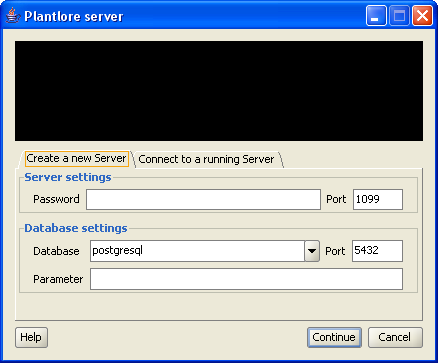
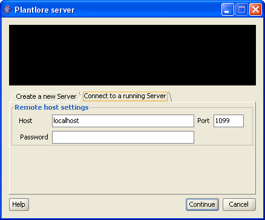
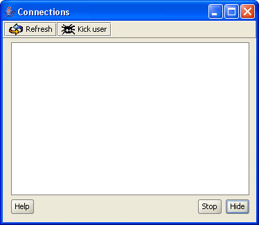

To allow other users to connect to your database remotely from other computers in the network, you must start the Plantlore Server. The Server mediates connection for remote clients and controls the number of connected clients. There can be 3 users connected from the same computer (using the same IP) and the total number of clients cannot exceed the number 32. This is the default settings.
You can modify the settings of the server on the Create a new Server tab.

The Server can be started only on the local computer - because of security reasons. You can specify following parameters:
| Server Settings | |
|---|---|
| Parameter | Meaning |
| Password | After the Server is started, it can be controlled remotely. To restrict the access to the Server for administration purposes, you can set a password that will protect the Server. Anyone trying to control the Server will have to pass the password to gain full control. |
| Port | Port specifies where the Server should listen for connections from remote clients. Port is a number from 0 to 65.535 and ports above 1.024 are commonly used. Lower ports are usually reserved for well known services (such as FTP, HTTP, etc.). Ports cannot be shared - you must make sure that the specified port is not in use by another application. The default port where Plantlore Server listens is 1099. |
| Database Settings | |
| Parameter | Meaning |
| DB engine | There is a wide variety of database engines that allow you to work with databases, tables, users, queries and data very easily. Every database engine can store several different databases - databases with different structure and contents. The best known database engines are Oracle, MSSQL, MySQL, Postgre and Firebird. Plantlore can work with some of these database engines, but it is necessary to specify with which it should work so that the Server can communicate with it properly. Plantlore is delivered and tested with Postgre. |
| DB Port | Database engines can be contacted on a certain port. Every database engine may have a different port number. In order to know where to contact the database engine, you have to supply the port where the database engine listens. Port is a number from 0 to 65.535 and ports above 1.024 are commonly used. Lower ports are usually reserved for well known services (such as FTP, HTTP, etc.). The default port of PostgreSQL database engine is 5432. |
| Parameter |
The database engine may require some additional settings.
For instance you have to set the encoding explicitely.
This parameter server for the proper additional configuration
of the database connection.
Postgre does not require any additional parameter.
Note: the parameter is a value passed in the JDBC connections string right after the exclamation mark "?" |
If there is a Server that is already running, you can control it remotely. First, you have to connect to the Server using the Connect to a running Server tab.

You have to supply the following parameters.
| Parameter | Meaning |
|---|---|
| Host | This parameter identifies the computer where the Server is running - either by its name or IP address. Every computer connected to a network must have its own unique IP address so that it can be identified in the network. IP address is a sequence of four numbers separated with dots, for instance "192.168.0.247". Some computers may have also a name, such as "data.home.net". |
| Port | The port specifies where the remote Server listens. Port is a number from 0 to 65.535 and ports above 1.024 are commonly used. Lower ports are usually reserved for well known services (such as FTP, HTTP, etc.). The default port is 1099. |
| Password | The password protecting the access to the Server for remote control. |
The Administrator of the Server can obtain the information about currently connected clients, and can switch off the Server.

After connecting to the Server the Administrator can see the list of currently connected clients. The Administrator can:
Sometimes the Plantlore Server is unable to auto-detect the IP address of the computer where it runs, although the detection routine is quite inquisitive. It usually happens on computers with two different network interfaces or in Linux (mostly if /etc/hosts contains invalid information).
JRE requires the "java.rmi.server.hostname" to be set properly, otherwise the RMI mechanism will fail when someone will try to contact the Server remotely. The typical message is:
java.rmi.ConnectException: Connection refused to host: 127.0.0.1;
nested exception is:
java.net.ConnectException: Connection refused: connect
In order to make the Server work, you must specify the IP address yourself. You can do this when starting the Server:
java -Djava.rmi.server.hostname=YourIP -jar plantlore-server.jar
or (if you are not using the jar archive):
java -Djava.rmi.server.hostname=YourIP net.sf.plantlore.server.Plantlore